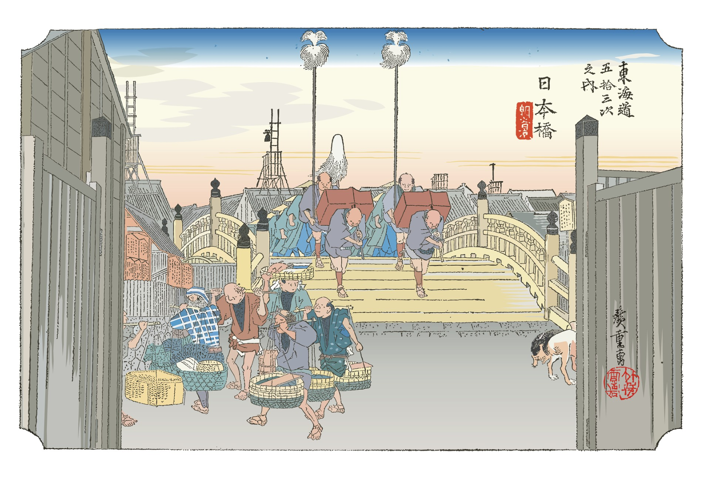

The bridge
Japan's best
deserves.
魅力を届ける
架け橋に。
We act as a creative and strategic bridge between Japan and the world — leveraging our experience and network to elevate brands, ideas, and experiences that deserve global attention. 日本の魅力的なヒト・モノ・コトを、グローバルなネットワークと経験を活かして、新しい形で世界に届けるお手伝いがしたい。私たちは、ブランドや地域、個人のポテンシャルを引き出す「架け橋」を目指します。
A bridge to
bring Japan's
best to the world.
魅力を届ける
架け橋に。
We act as a creative and strategic bridge between Japan and the world — leveraging our experience and global network to elevate brands, ideas, and experiences that deserve international attention.
日本の魅力的なヒト・モノ・コトを、グローバルなネットワークと経験を活かして、新しい形で世界に届けるお手伝いがしたい。私たちは、ブランドや地域、個人のポテンシャルを引き出す「架け橋」を目指します。日本のひと・もの・ことが持つ本来の価値を、世界に伝えるために。
We aspire to be the "bridge" that draws out the potential of brands, regions, and individuals. Whether it's a local artisan, a regional product, or a cultural experience — if it has soul, we help it find its global audience.
Three ways we bridge the gap. 三つの架け橋で、世界をつなぐ。
Consulting コンサルティング事業
We provide tailored consulting that closely addresses the challenges faced by business operators — from management strategy and marketing to international expansion — helping resolve issues and drive sustainable growth.
事業者様のお困りごとに寄り添うきめ細やかなコンサルティングにより、事業における課題解決をお手伝いします。経営戦略・マーケティング・海外展開など、多岐にわたる分野で伴走します。
Trade & Export 貿易事業
We deliver Japan's finest products — food, beverages, crafts, and goods cultivated with care within the country — to the world through our trusted and reliable logistics network.
日本国内で生み出され、育てられてきた価値あるものを、信頼できる物流網により世界にお届けします。食品・酒類・雑貨など、日本の本物をグローバルへ。
Inbound Tourism インバウンド向け事業
Our expert tour guides introduce visitors to Japan's people, nature, and culture — crafting authentic, meaningful experiences that connect hearts to the true soul of Japan.
ツアーガイドにより、日本を訪れる人々にひと・自然・文化の魅力を伝えます。地域観光・文化体験のツアー企画、運営、ガイドマッチングまで一貫して対応します。

In the Edo period, Nihonbashi was the starting point of all five major highways — a vital hub of land and water trade that flourished as the centre of Japan's commercial world.
江戸時代の日本橋は、五街道の起点であり、水陸交通の要衝として、日本の物流の中心地として栄えた。
This is the spirit that animates KBB Corp. Like Nihonbashi, we stand at the point where all roads meet — connecting Japan's finest people, products, and culture to the wider world with intention and care.
その精神が、私たちKBBコーポレーションの礎です。日本橋のように、すべての道が交わる場所に立ち、日本の優れたヒト・モノ・コトを、誠実さと想いをもって世界へつなぎます。
Walking alongside you — overcoming every challenge, together. 事業者様の思いに寄り添い、共に困難を乗り越える。
Contact Us 問い合わせる
株式会社
KBB
株式会社
KBB
KBB Co., Ltd.
英文表記：KBB Co., Ltd.
| Company Name | 会社名 | KBB Co., Ltd. (株式会社KBB) 株式会社KBB（英文表記：KBB Co., Ltd.） |
|---|---|---|
| Representatives | 代表者名 | 日上 健太 ／ チョウ・ソンボム |
| Headquarters | 本社所在地 | Aoyama Marutake Bldg. 6F, 3-1-36 Minami-Aoyama, Minato-ku, Tokyo 〒150-0021 〒150-0021 東京都港区南青山3-1-36 青山丸竹ビル6F |
| Established | 設立 | April 2025 令和7年4月 |
| Capital | 資本金 | ¥1,000,000 100万円 |
| Corporate No. | 法人番号 | 2010401190081 |
| Business | 事業内容 |
|
Let's build
something lasting.
永続するものを共に創りましょう。
Whether you are a Japanese company seeking global expansion or an international firm navigating Japan — we are the bridge.
グローバル展開を目指す日本企業にも、日本市場での展開を目指す海外企業にも、私たちが架け橋となります。